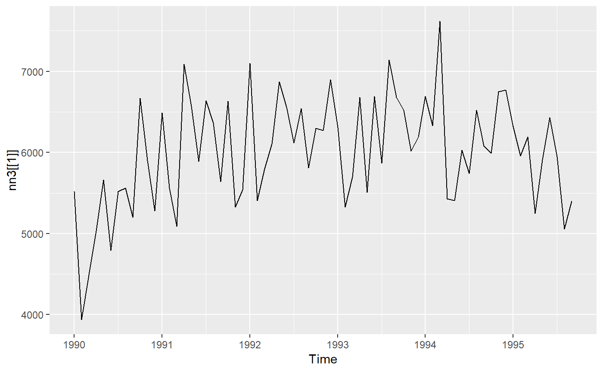
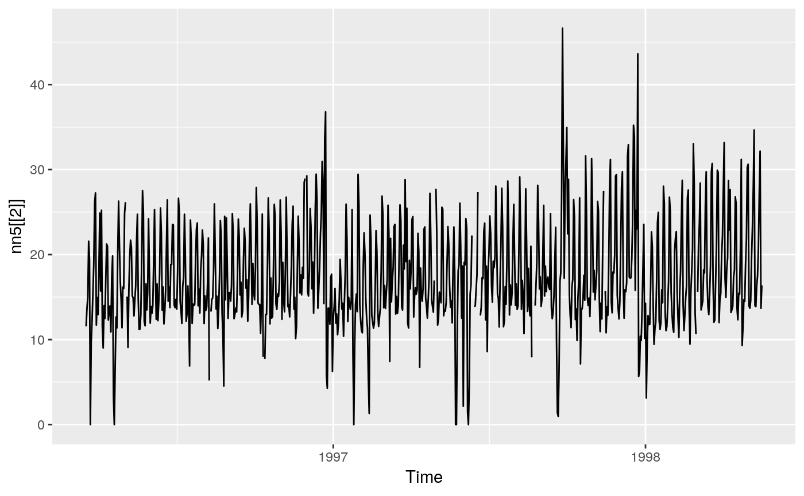
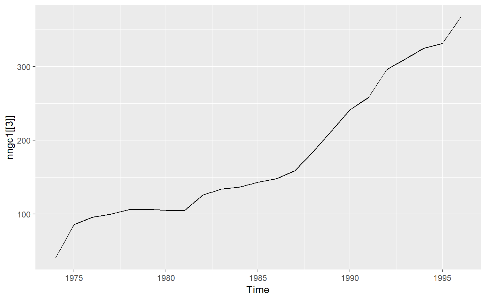
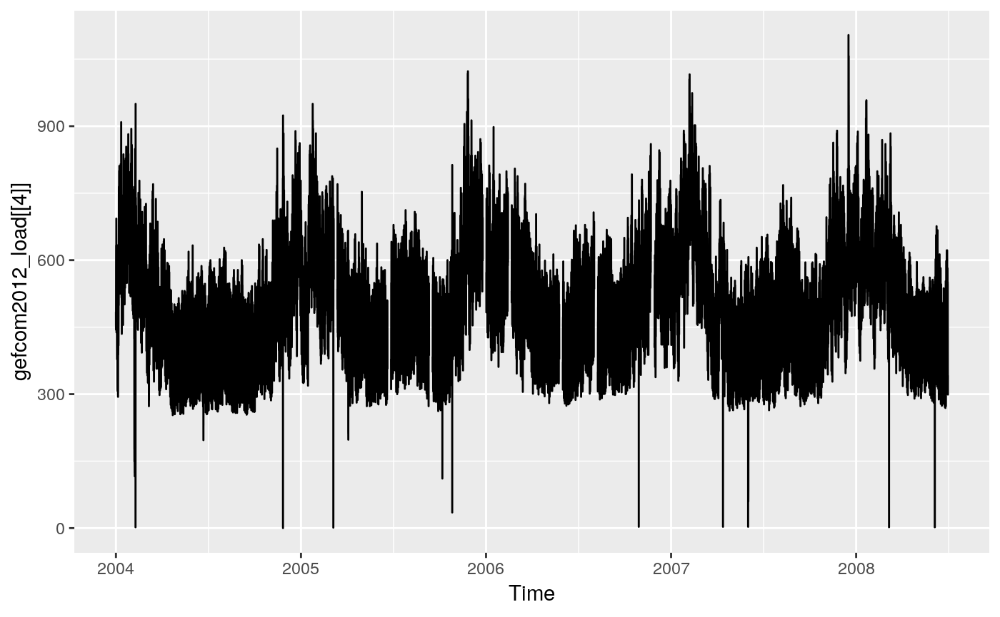
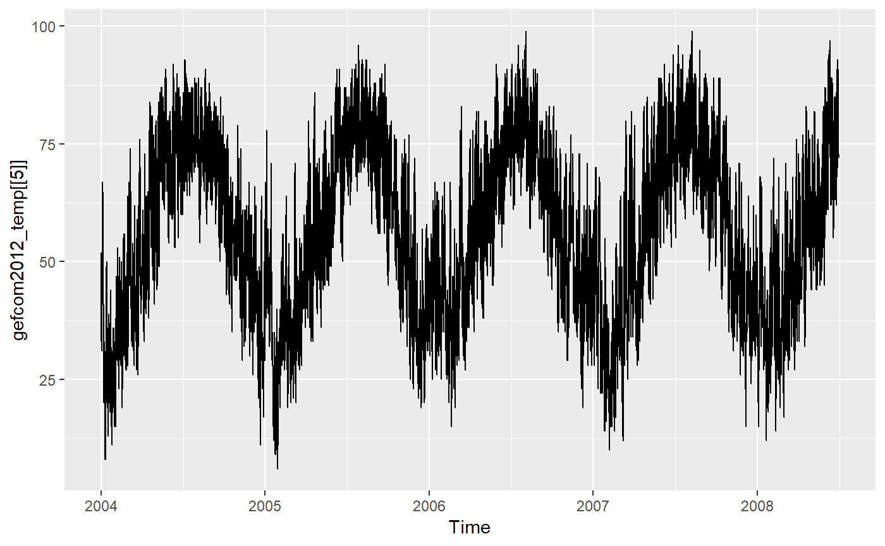
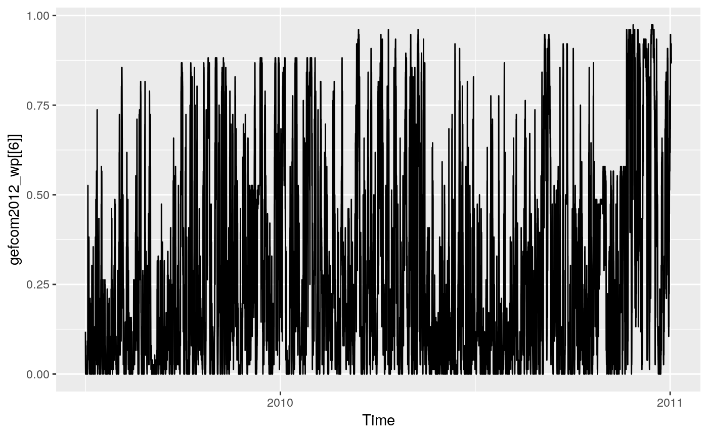
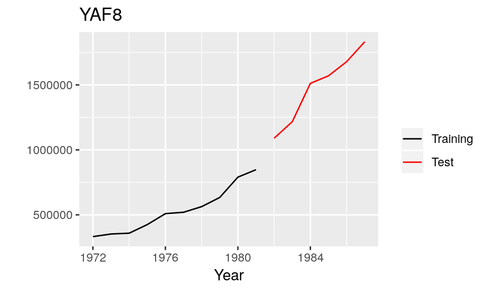
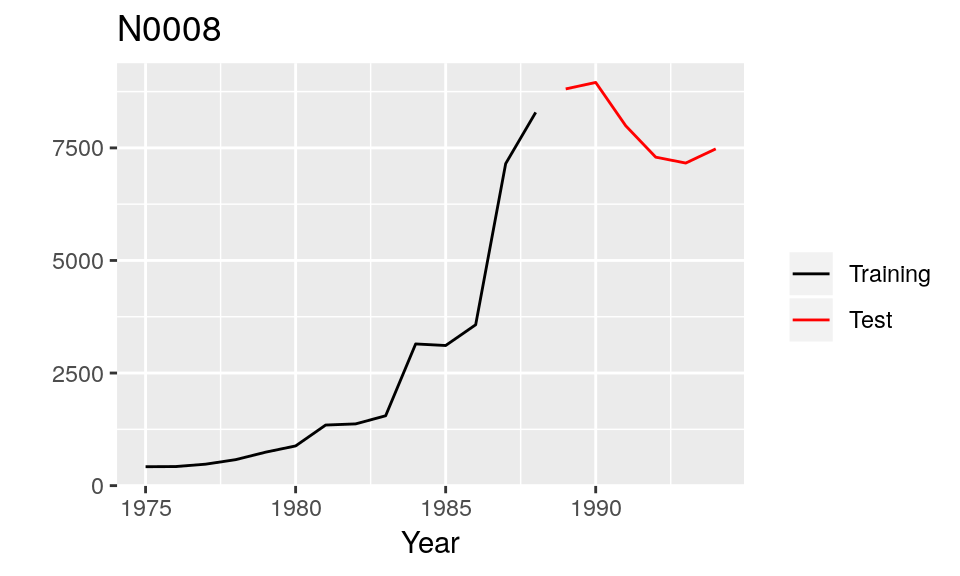
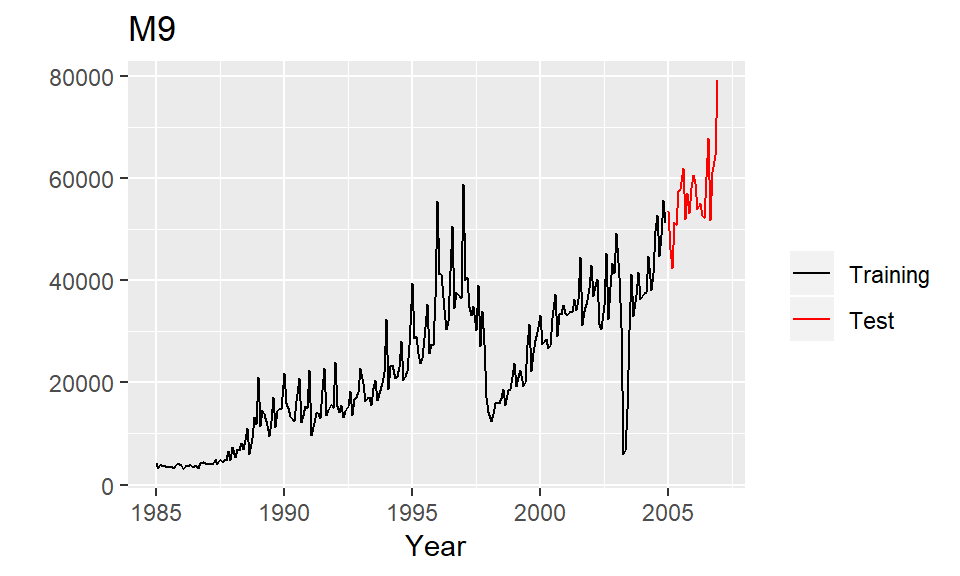

vignettes/tscompdata.Rmd
tscompdata.RmdThe R package tscompdata provides time series data from the following forecasting competitions: M, M3, NN3, NN5, NNGC1, Tourism and GEFCom2012.
The M, M3 and Tourism data are loaded from the Mcomp and Tcomp packages. The remaining data are contained within the tscompdata package.
You can install the development version from Github with:
library(tscompdata)
#> Loading required package: Mcomp
#> Loading required package: forecast
#> Loading required package: Tcomp
library(ggplot2)Data from the NN3 forecasting competition, comprising 111 monthly time series each of class ts.
Training and test data are combined. In the competition, the last 18 months were used as test data. Time series NN3-101 to NN3-111 made up the reduced data set from the competition.

Data from the NN5 forecasting competition, comprising 111 daily time series each of lass msts.
Training and test data are combined. In the competition, the last 56 days were used as test data. Time series NN5-101 to NN5-111 made up the reduced data set from the competition.

Data from the NNGC1 forecasting competition, comprising 11 annual time series, 11 quarterly time series, 11 monthly time series, 11 weekly time series, 11 daily time series and 11 hourly time series each of class ts or msts. Only training data are provided.
head(nngc1[[3]])
#> Time Series:
#> Start = 1974
#> End = 1979
#> Frequency = 1
#> [1] 40.833 85.797 95.567 99.921 106.035 106.587
autoplot(nngc1[[3]])
Data from the GEFCOM2012 forecasting competition which was hosted on the kaggle platform. The data comprise 20 time series containing hourly load data from 20 zones in the United States, each of class msts. Only training data are provided. The missing data in each series formed the test sets.
head(gefcom2012_load[[4]])
#> Multi-Seasonal Time Series:
#> Start: 2004 1
#> Seasonal Periods: 24 168 8766
#> Data:
#> [1] 484 457 450 448 444 490
autoplot(gefcom2012_load[[4]])
Data from the GEFCOM2012 forecasting competition which held on the kaggle platform. The data comprise 11 time series containing hourly temperature data from 11 weather stations in the United States, each of class msts.
head(gefcom2012_temp[[5]])
#> Multi-Seasonal Time Series:
#> Start: 2004 1
#> Seasonal Periods: 24 168 8766
#> Data:
#> [1] 42 42 40 39 40 41
autoplot(gefcom2012_temp[[5]])
Data from the GEFCOM2012 forecasting competition which held on the kaggle platform. The data comprise 7 hourly time series containing wind power data from 7 wind farms, each of class msts. Only training data are provided. The missing data in each series formed the test sets.
head(gefcom2012_wp[[6]])
#> Multi-Seasonal Time Series:
#> Start: 2009 4384
#> Seasonal Periods: 24 168 8766
#> Data:
#> [1] 0.118 0.066 0.026 0.013 0.000 0.013
autoplot(gefcom2012_wp[[6]])
The 1001 time series from the M competition, taken from demography, industry and economics, and ranging in length between 9 and 132 observations. All the data were either non-seasonal (e.g., annual), quarterly or monthly. All the data were positive, which made it possibly to compute mean absolute percentage errors, but is not really reflective of the population of real data.
M1 is of class Mcomp with each time series of class Mdata. The function subset inherited from the Mcomp package can return a subset specified by periods, or types of data or both. See the Mcomp package for more details.
M1
#> M-Competition data: 1001 time series
#>
#> Type of data
#> Period DEMOGR INDUST MACRO1 MACRO2 MICRO1 MICRO2 MICRO3 Total
#> MONTHLY 75 183 64 92 10 89 104 617
#> QUARTERLY 39 18 45 59 5 21 16 203
#> YEARLY 30 35 30 29 16 29 12 181
#> Total 144 236 139 180 31 139 132 1001
autoplot(M1[[7]])
subset(M1,"monthly")
#> M-Competition data: 617 MONTHLY time series
#>
#> Type of data
#> Period DEMOGR INDUST MACRO1 MACRO2 MICRO1 MICRO2 MICRO3
#> MONTHLY 75 183 64 92 10 89 104The 111 series used in the extended comparisons in the 1982 M-competition can be selected as follows.
subset(M1,111)
#> M-Competition data: 111 time series
#>
#> Type of data
#> Period DEMOGR INDUST MACRO1 MACRO2 MICRO1 MICRO2 MICRO3 Total
#> MONTHLY 8 21 8 9 1 10 11 68
#> QUARTERLY 5 2 5 6 0 3 2 23
#> YEARLY 3 4 4 3 2 3 1 20
#> Total 16 27 17 18 3 16 14 111The data in the Mcomp and Tcomp packages are in the Mcomp class which contains various information used in the competitions including the training and test portions of the time series. The function combine_training_test combines the training data and test data into a single ts object.
The time series from the M3 forecasting competition and the forecasts from all the original participating methods are stored in M3 and M3Forecast. M3 is a list of 3003 series of class Mcomp. Each series within M3 is of class Mdata. M3Forecast is a list of data.frames. See the Mcomp package for more details.
M3
#> M-Competition data: 3003 time series
#>
#> Type of data
#> Period DEMOGRAPHIC FINANCE INDUSTRY MACRO MICRO OTHER Total
#> MONTHLY 111 145 334 312 474 52 1428
#> OTHER 0 29 0 0 4 141 174
#> QUARTERLY 57 76 83 336 204 0 756
#> YEARLY 245 58 102 83 146 11 645
#> Total 413 308 519 731 828 204 3003
autoplot(M3[[8]])
Data from the tourism forecasting competition described in Athanasopoulos, Hyndman, Song and Wu (2011).
tourism is a list of 1,311 series of class Mcomp, and each individual series is an element of class Mdata. See the Tcomp package for more details.
tourism
#> M-Competition data: 1311 TOURISM time series
#>
#> Type of data
#> Period TOURISM
#> MONTHLY 366
#> QUARTERLY 427
#> YEARLY 518
autoplot(tourism[[9]])